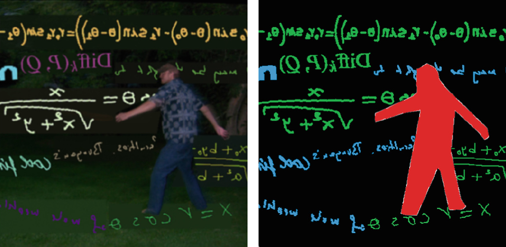
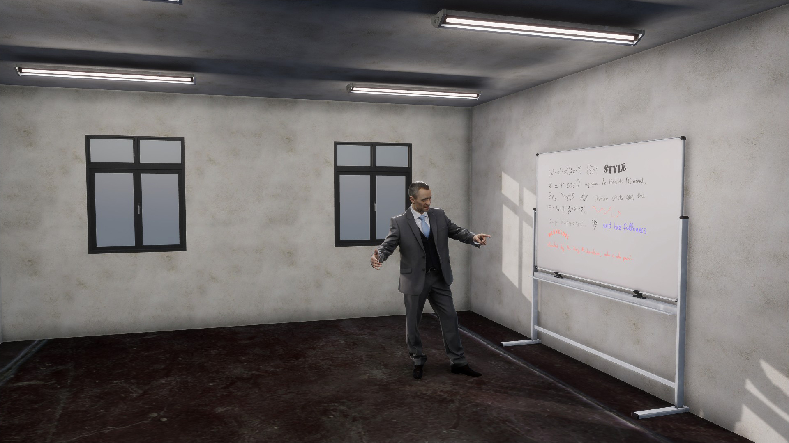
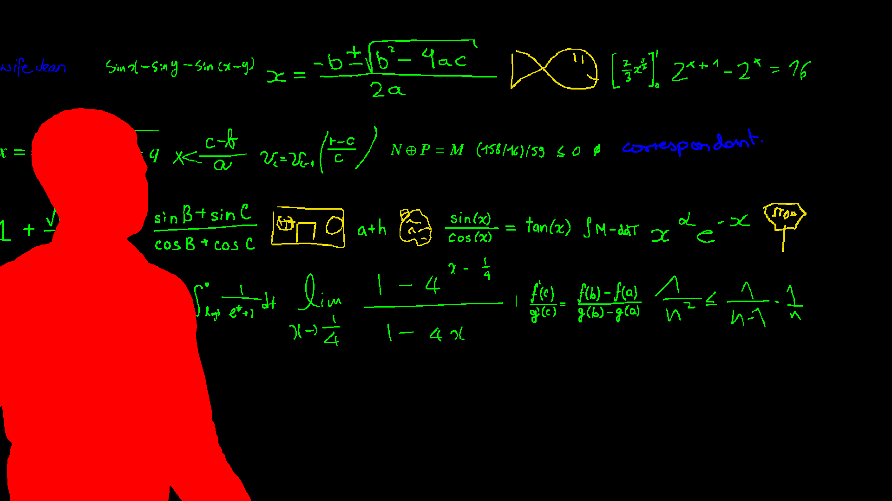
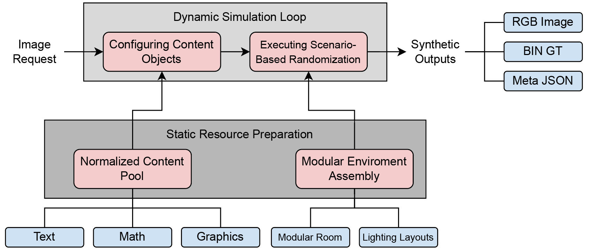
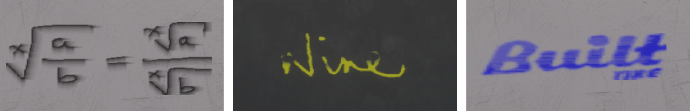

SimLec-HCE
A synthetic data generation pipeline that simulates the geometric and optical characteristics of real classroom environments through 3D physical simulation and efficiently generates pixel-level ground-truth masks.

Project Overview
Large-scale, high-quality pixel-level datasets are essential for deep learning-based lecture video analysis, particularly for handwritten content segmentation and extraction. However, the limitations of manual annotation lead to a shortage of training data.
SimLec-HCE addresses this problem by designing a Unity HDRP-based 3D physical rendering framework that simulates the interactions among physical camera lenses, classroom lighting, 3D human avatars, and writing surface materials, while automatically generating ground-truth masks.
The Core Problem: The Annotation Bottleneck
Manually annotating handwritten pixels in lecture frame images is an extremely inefficient process.
- Manual annotation cost: Approximately 40 minutes per image.
- For 128,000 images: Approximately 85,300 person-hours, equivalent to about 40 years of continuous work for a single person.
- SimLec-HCE's solution: Built a fully automated 3D data generation pipeline that dramatically reduces this cost. (Generating 64,000 images requires only 5.2 hours. The version uploaded to this repository includes optimization improvements over the original 14.2-hour pipeline.)
Limitations of 2D Synthesis
Conventional 2D synthesis methods, which simply composite handwriting onto static backgrounds and overlay COCO human masks, lack physical interactions and therefore introduce a significant Sim-to-Real Gap.

1. Inability to Simulate 3D Occlusions and Shadows
2D image compositing cannot physically reproduce three-dimensional occlusions that occur when an instructor moves in front of the board, nor can it simulate dynamic cast shadows projected onto the writing surface.
2. Limited Reproduction of Optical Reflection Properties
It cannot reproduce the real optical interactions between illumination and board materials, such as specular reflection on whiteboards or diffuse reflection on chalkboards. As a result, the synthesized handwriting often appears visually detached from the background.
3. Missing Spatial Distortion and Context
There are inherent limitations in reproducing perspective distortion caused by real camera lenses, as well as subtle physical illumination changes resulting from the directionality of indoor lighting.
Our Solution: 3D Physically-Based Data Generation
To overcome these limitations, we designed a pipeline that physically renders every component inside a virtual 3D environment.
Highly realistic 3D classroom environment: Simulates various 3D classroom layouts, window lighting that changes according to time and weather conditions, a 3D human avatar that mimics the instructor's random movements, and the physical appearance of real whiteboard and chalkboard surfaces.

G-Buffer-based Automatic Annotation: Even when the instructor avatar occludes the writing, the rendering engine performs real-time Depth (Z-buffer) testing so that only the visible handwriting regions are included in the pixel-level ground-truth mask. We do not control the buffer directly — Unity Perception handles this automatically.

Data Generation Pipeline
The pipeline consists of the following stages.

1. 2D Content Loading & Stochastic Layout
- Dataset Loading: Loads public datasets including
CROHME,WikiMath(mathematical expressions),IAM,TotalText(handwriting), andQuickDraw(graphics). - Logical Line Packing: Handwriting samples are randomly arranged on a 3D board plane using a line-wrapping algorithm similar to that of a word processor. Small positional jitter is applied to generate irregular layouts resembling real handwritten notes.
2. Shader-level Writing Physics
To go beyond simple texture rendering, custom shaders simulate the interactions between writing instruments and board surfaces.
- Drip (Ink Flow): Simulates the slight spreading or downward flow of liquid marker ink.
- Break (Stroke Discontinuity): Simulates stroke discontinuities and fine powder-like textures caused by friction when writing with chalk.
- Thickness (Pressure Variation): Simulates variations in stroke thickness and texture caused by differences in writing pressure and writing speed.

3. Domain Randomization
Randomly samples scene parameters within predefined probability distributions, including:
- Lighting layout
- Illumination intensity (Lux/Lumen)
- Camera field of view (FOV)
- Chalkboard eraser marks
- Surface scratches
- And more...
to improve the robustness and generalization capability of the trained model.
Key Results & Cost Efficiency
1. Strong Generalization (Zero-shot Performance)
Zero-shot evaluation was performed on the real-world LectureMath dataset without any training on real images.
- F1-score of the model pretrained on 3D synthetic data: 79.48%
- Improvement over the previous 2D synthesis method: +10.26 percentage points
- Significance: Demonstrates that physically-based 3D environment modeling can help bridge the Sim-to-Real Gap.
2. Time and Cost Efficiency
- Generation speed: Approximately 30 seconds per 100 images on a single laptop/workstation.
- Cost efficiency: More than 8,000× more cost-effective than manual annotation for building a training dataset.
Repository Link & Citation
The source code of the data generation pipeline used in this work is available in this repository. You can explore the implementation and reproduce the data generation process. If you find this project useful in your research, please consider citing our work.
@InProceedings{10.1007/978-3-032-36033-5_30,
author = {Song, Min and Davila, Kenny},
editor = {Fink, Gernot A. and Forn{\'e}s, Alicia and Kise, Koichi and Lopresti, Daniel},
title = {Synthetic Data from Simulated Lecture Environments for Handwritten Content Extraction},
booktitle = {Document Analysis and Recognition -- ICDAR 2026},
year = {2027},
publisher = {Springer Nature Switzerland},
address = {Cham},
pages = {503--519},
isbn = {978-3-032-36033-5}
}